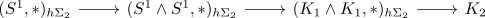

unitality of steenrod operation
Proposition
Then
Proof
$X = S^1$
Let $\iota_1 \in H^1(S^1, \mathbb{Z}/2 \mathbb{Z})$ be the nonzero element.
observe that
where we get the map
we need to prove, that
we need to proof that the composition

is not zero on $H^2(-,\mathbb{Z}/2 \mathbb{Z})$
It suffices to proove that
is an isomorhpism where
are abstractly isomorphic to $\mathbb{Z}/2 \mathbb{Z}$
It suffices to show that the map is surjective and hence injective (cf. Äquivalenz von Bijektivität, Surjektivität und Injektivität bei gleich mächtigen, endlichen Mengen)
Here consider
as pointed $\Sigma_2$ invariant map.
Then the mapping cone is given by
or hence up to homotopy equivalence $S^1$
Here the $\Sigma_2$ action up to homotopy is given by
actual proof
$n = 0$
Then
since
where the frobenius endomorphism is an isomorphism.
$n \geq 1$
Then it suffices to show that
for $\iota_n \in H^n(K_n, \mathbb{F}_2) = F_2$ since any map is given by the pullback (cf. naturality of the steenrod operation)
Hence it suffices to show that for any $n \geq 1$ there exists a space $X$ with
with $\mathrm{Sq}^0(x) \neq 0$
Luckily we have shown that
so after suspending (cf. stability of steenrod operations) this claim follows